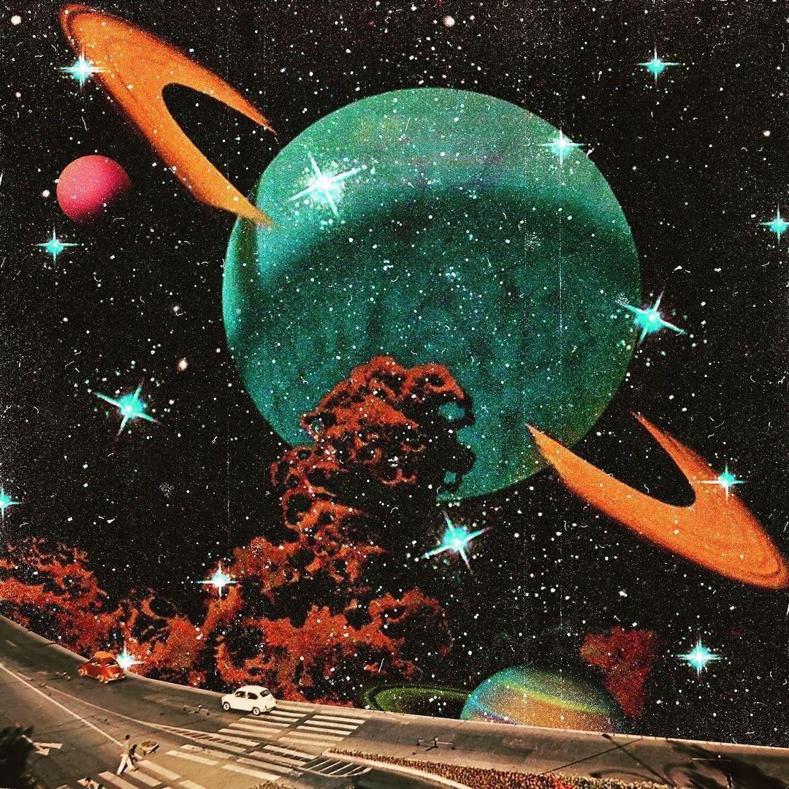
ПЛАНЕТА ENERGY
Визуальное исследование космоса и человеческого сознания.
Галерея
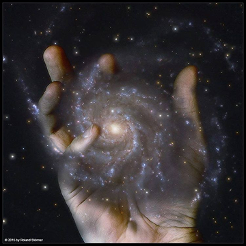
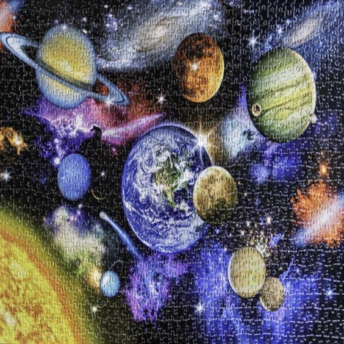
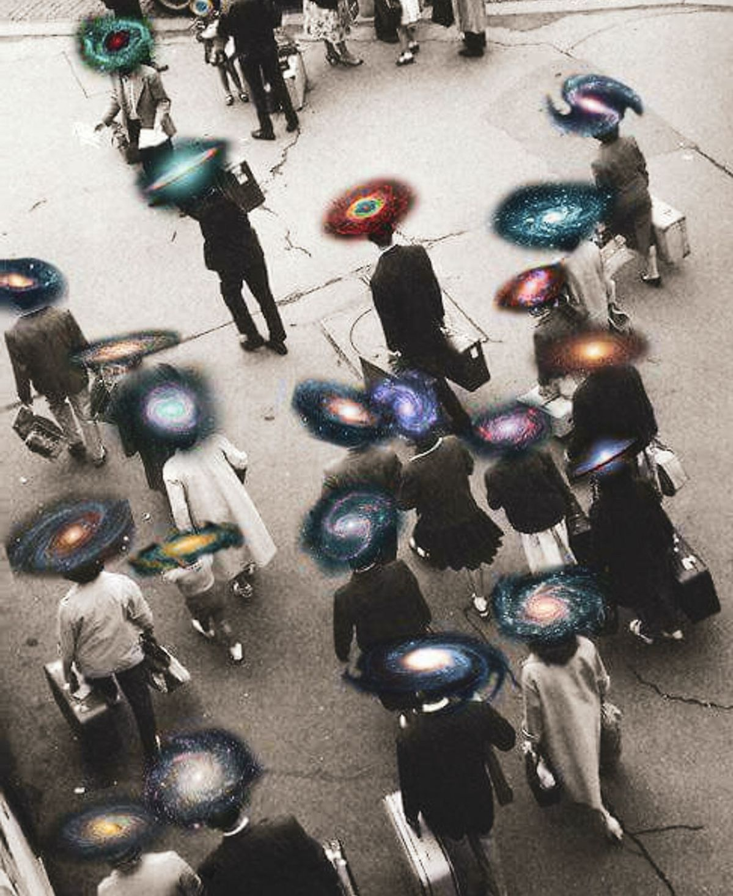
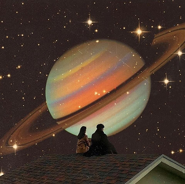
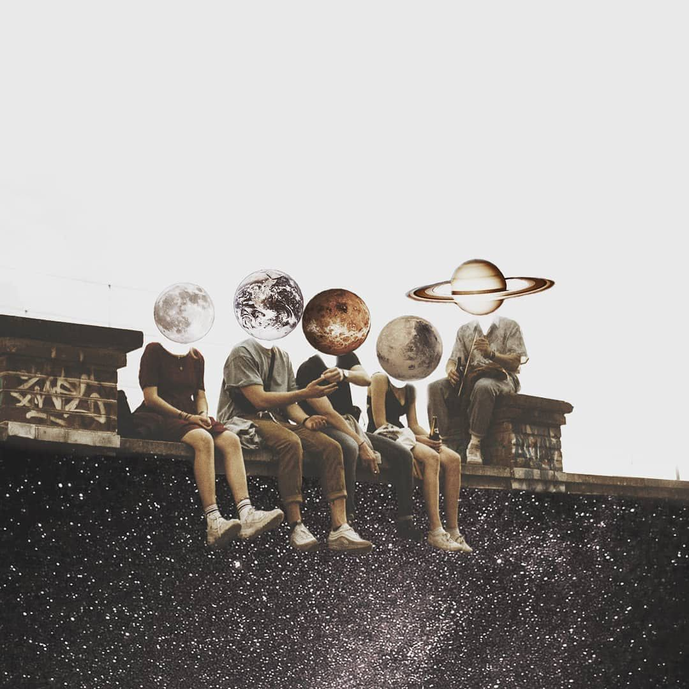
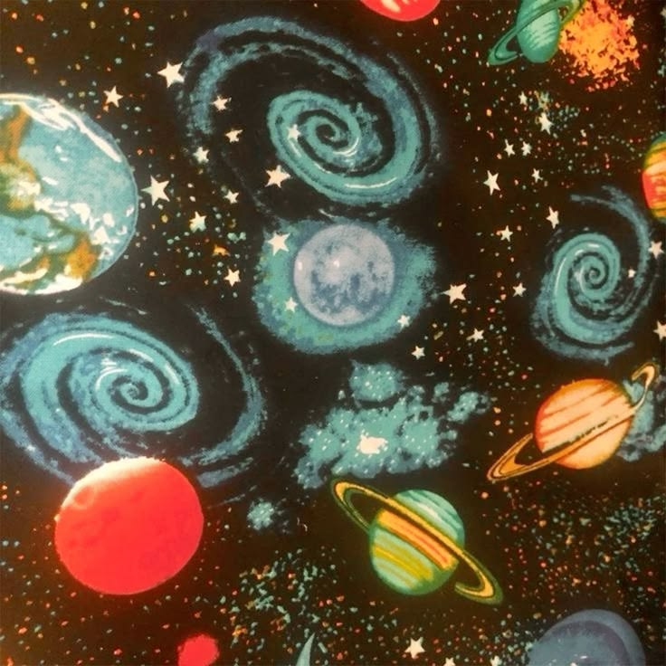
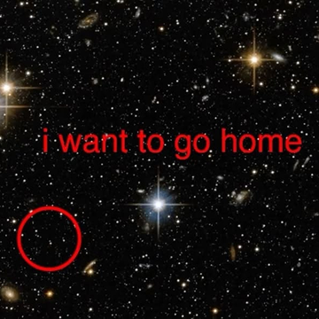
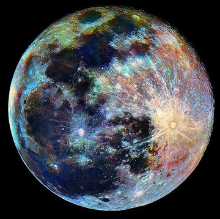
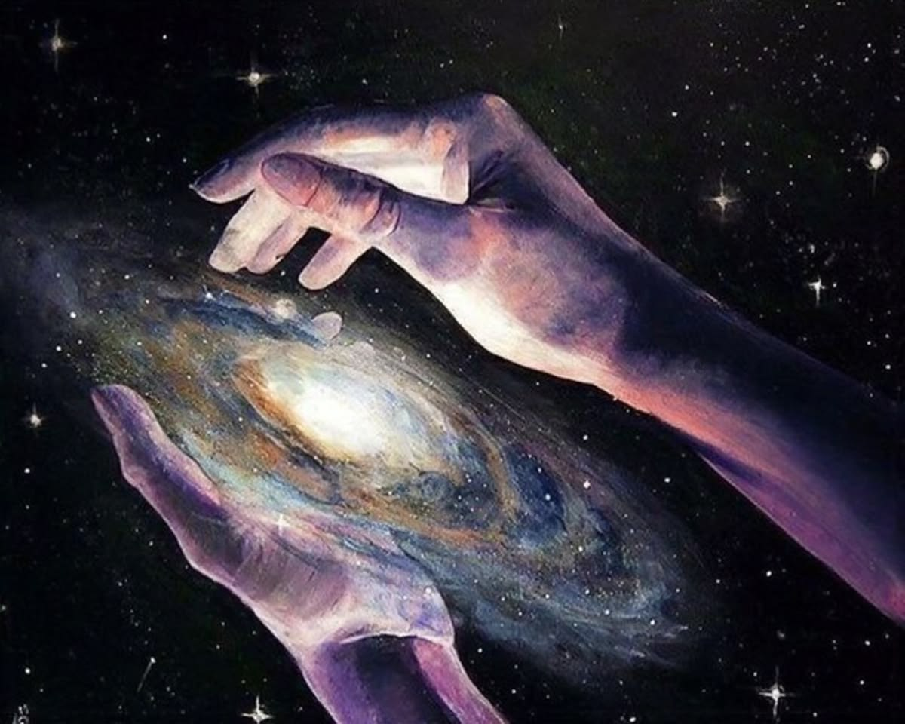
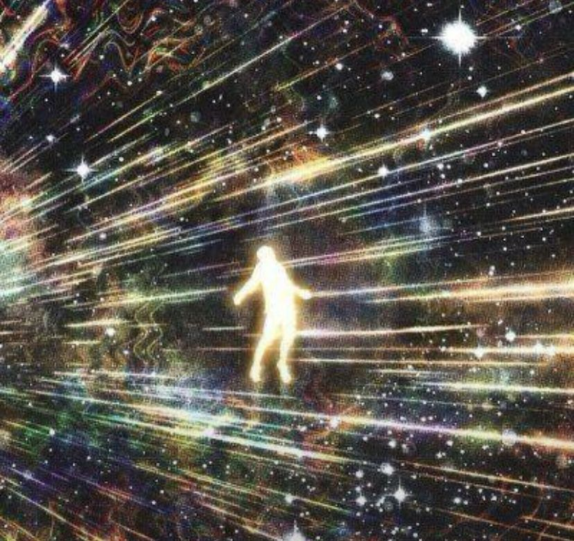
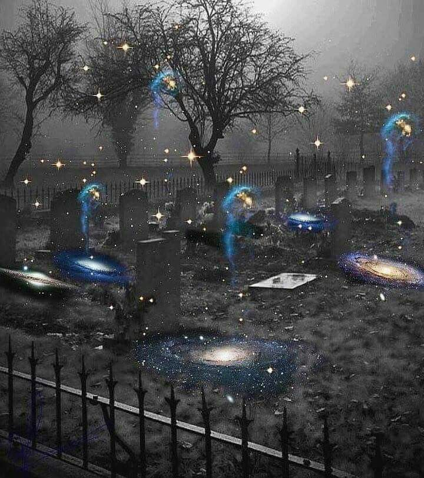
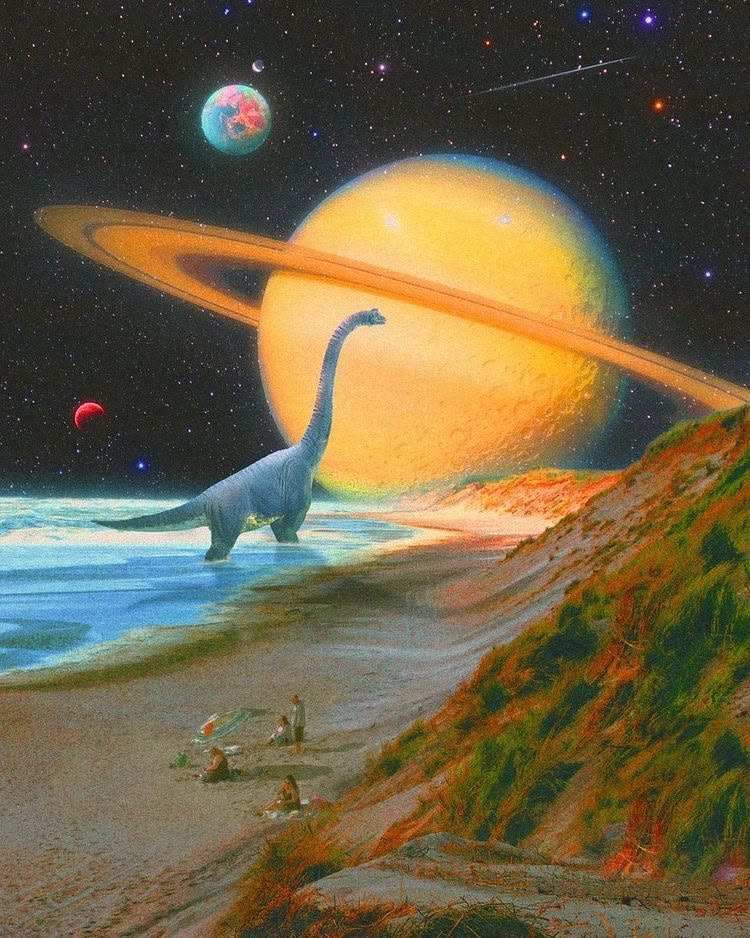
О проекте
«Планета ENERGY» — это визуальное исследование космоса и человеческого сознания, созданное под руководством Школы вожатых ENERGY. Мы смотрим на звёзды, но на самом деле ищем отражение самих себя и тех, кого мы ведём за собой.
Космос внутри нас
Проект объединяет ретро-футуризм и современный коллаж. Каждое изображение в галерее — это метафора. Планеты с кольцами, загадочные туманности и люди, чьи головы скрыты за галактиками, создают единое полотно. Мы верим, что изучение далёких миров — это способ лучше понять собственные эмоции, страхи и мечты.
Под руководством...
Проект создан в рамках творческой деятельности Школы вожатых ENERGY. За более чем 10 лет школа выпустила 3000+ вожатых, которые работают в лагерях Москвы, области и юга России. «Планета ENERGY» — это наш способ показать, что педагогика — это не только методики и игры, но и бесконечное творчество, полёт фантазии и поиск своего места во Вселенной.
Зачем это вожатым?
Школа вожатых ENERGY с 2014 года обучает тех, кто готов вести за собой. Вожатый — это тот, кто создаёт свою маленькую вселенную (отряд) и наполняет её смыслом. Этот проект — визуальное отражение того, как мы работаем с детьми: мы не просто даём знания, мы делимся образом жизни и идеями. Как и в космосе, в отряде важна каждая деталь, каждая планета (личность) имеет свою орбиту, а вместе они образуют единую систему.
Частые вопросы
Это визуальное исследование космоса и человеческого сознания, созданное под руководством Школы вожатых ENERGY. Мы объединили ретро-футуризм, коллаж и педагогику, чтобы показать: каждый отряд — это маленькая вселенная, где у каждого ребёнка есть своя орбита.
Вожатый — это тот, кто ведет за собой. Мы в ENERGY с 2014 года обучаем вожатых, и этот проект — наш способ показать, что педагогика — это не только методики, но и бесконечное творчество. Как и в космосе, в отряде важна каждая деталь и каждая личность.
Мы вдохновлялись образами планет, туманностей и людей, чьи головы скрыты за галактиками. Каждый коллаж — это метафора: страх, мечта, поиск себя или «дом». Проект создан творческой группой ENERGY под руководством наших мастеров и методистов. Разработанн с помощью нейросетей, коллажей и вдохновения от космоса.
Это педагогический отряд, который с 2014 года обучает вожатых, старших вожатых и организаторов мероприятий. За это время мы выпустили более 3000 человек, которые работают в лагерях Москвы, области и юга России. Мы не просто обучаем — мы делимся образом жизни и идеями.
Стань частью ENERGY
Если ты хочешь не просто смотреть на звёзды, но и вести за собой — присоединяйся к Школе вожатых ENERGY. Обучение, которое меняет жизнь.